Partem do seu rascunho em Livro: O Código: o retângulo-dominó (branco com bola preta = abstrato, metafísico, entrada; preto com bola branca = sólido, físico, matéria, luz), as peças de quebra-cabeça e a era adâmica. Na frente, o lado preto: o homem na matéria com a centelha. No verso, o lado branco: a superação adâmica. Slogan escolhido: “A superação adâmica”, porque nomeia o arco inteiro do livro (do cap. 1, Era adâmica, ao cap. 7, Superação) e é só desta obra; “alfabetização espiritual” fica no texto do verso e “gnose” no corpo, onde o leitor já tem contexto.
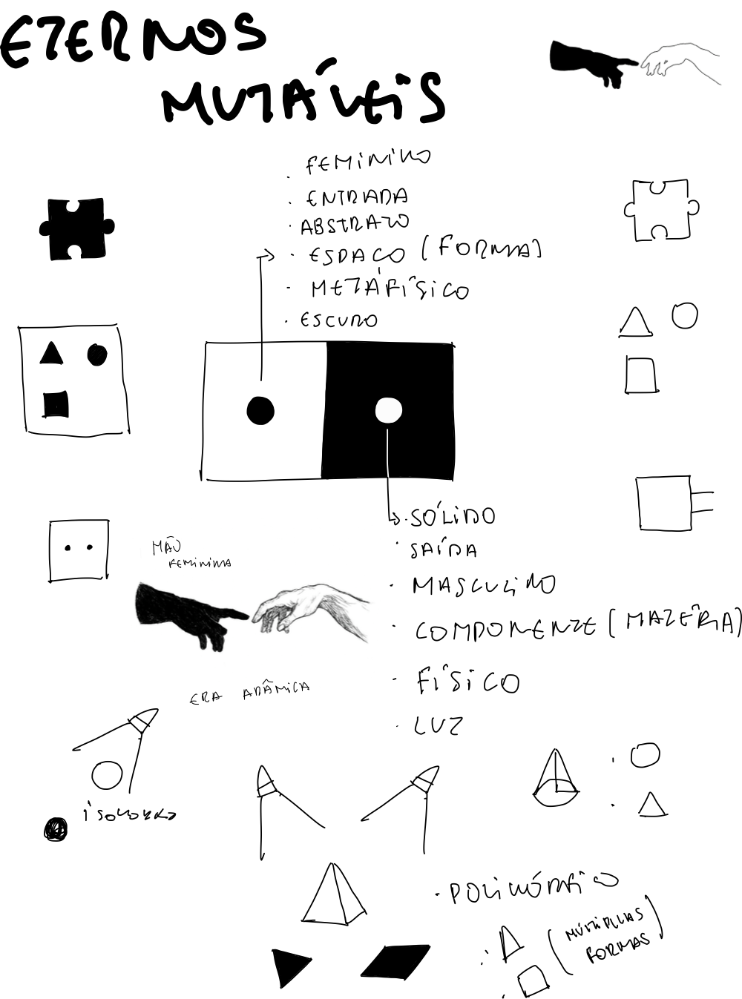
A frente é o lado preto da peça, com a bola branca (matéria, luz, a centelha); o verso é o lado branco, com a bola preta (o metafísico). Virar o livro é a superação adâmica.
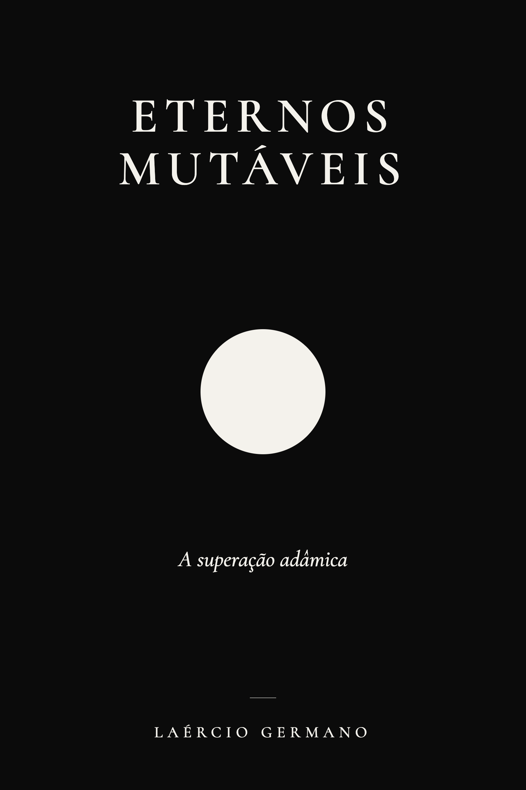
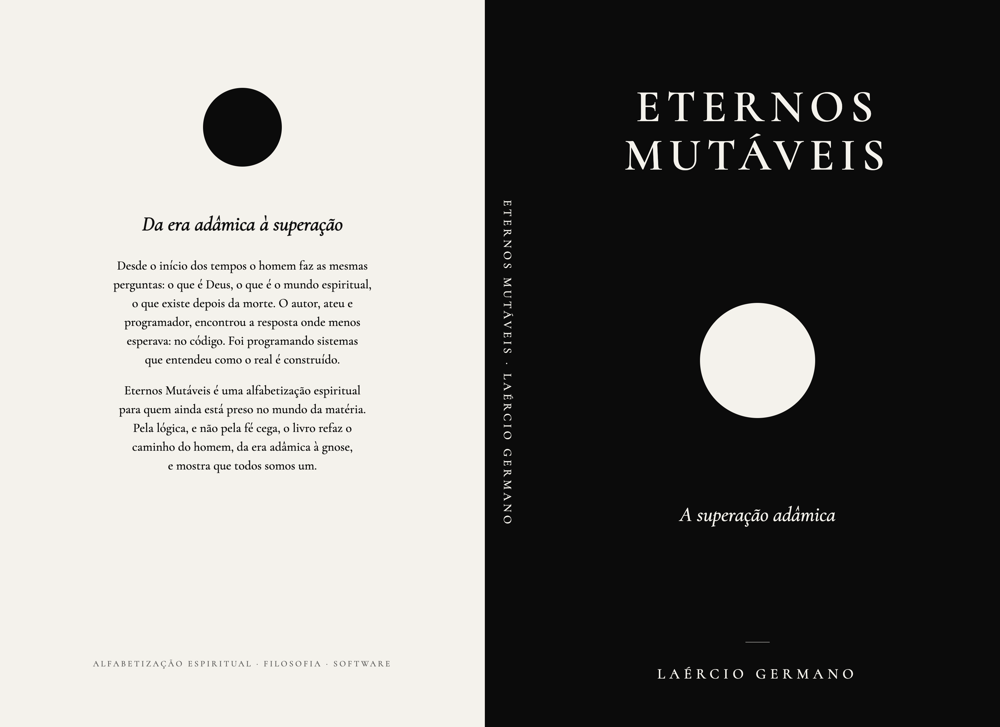
Frente e verso são duas peças que se encaixam na lombada: a bola branca é o encaixe do verso entrando no preto; a bola preta, o do preto entrando no branco. Todos somos um.
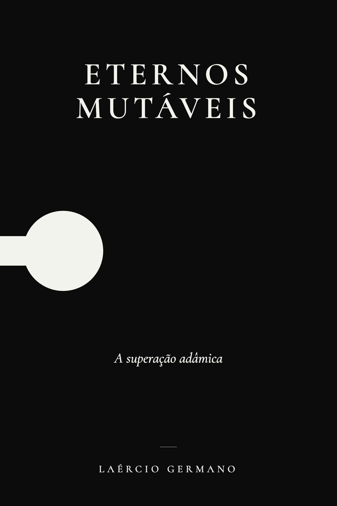
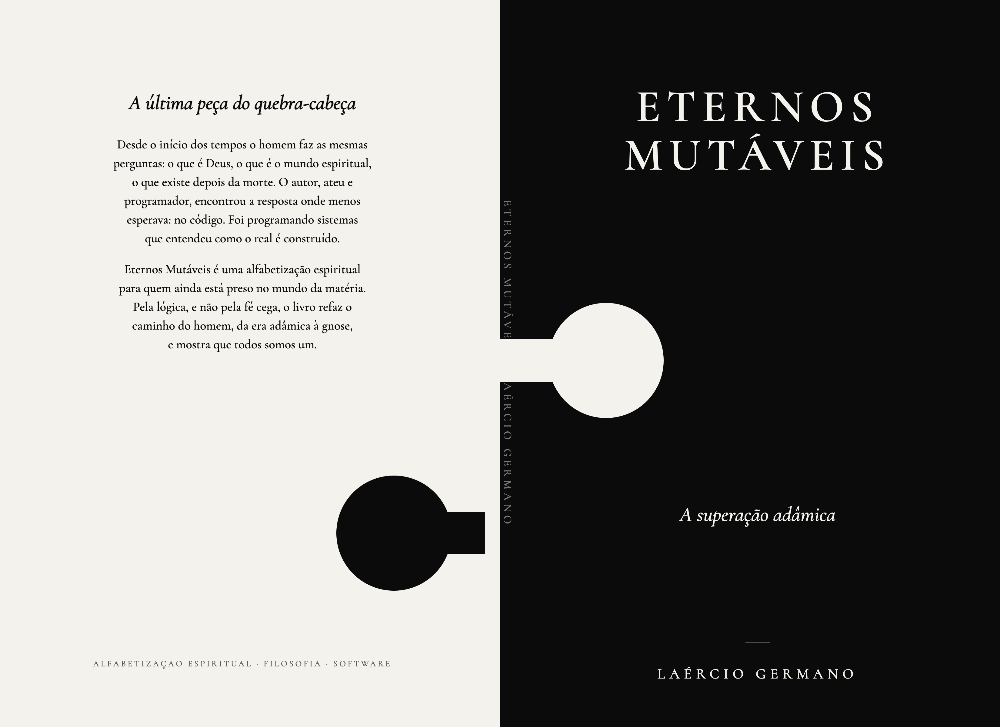
Dualidade: a frente vermelha (era adâmica: sangue, terra, desejo, matéria) e o verso azul (céu, espírito, superação). A lombada faz a passagem. A bola segue o dominó: branca na frente, preta no verso.
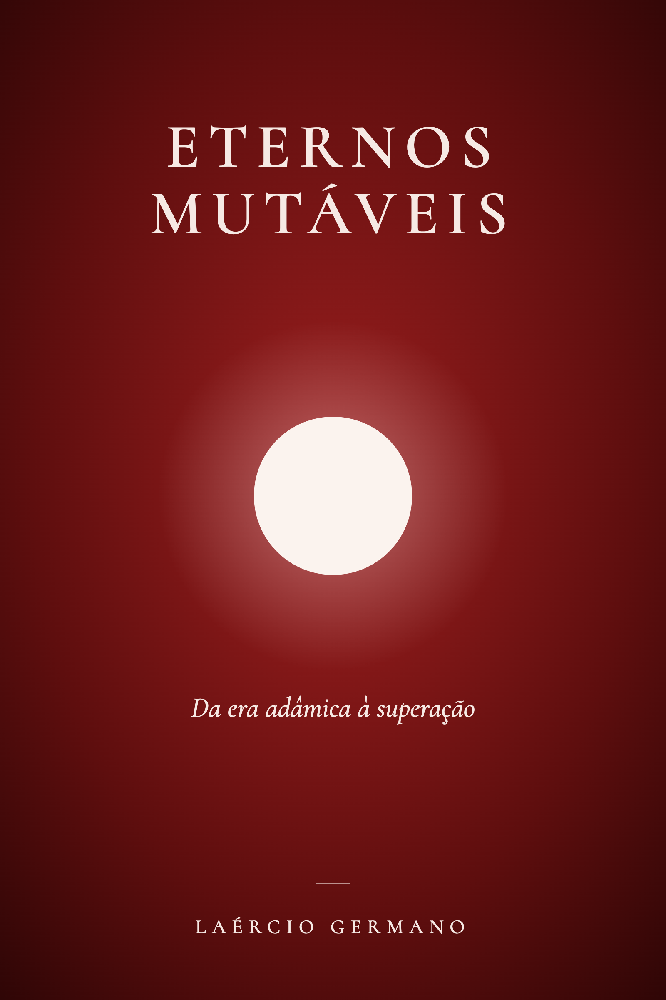
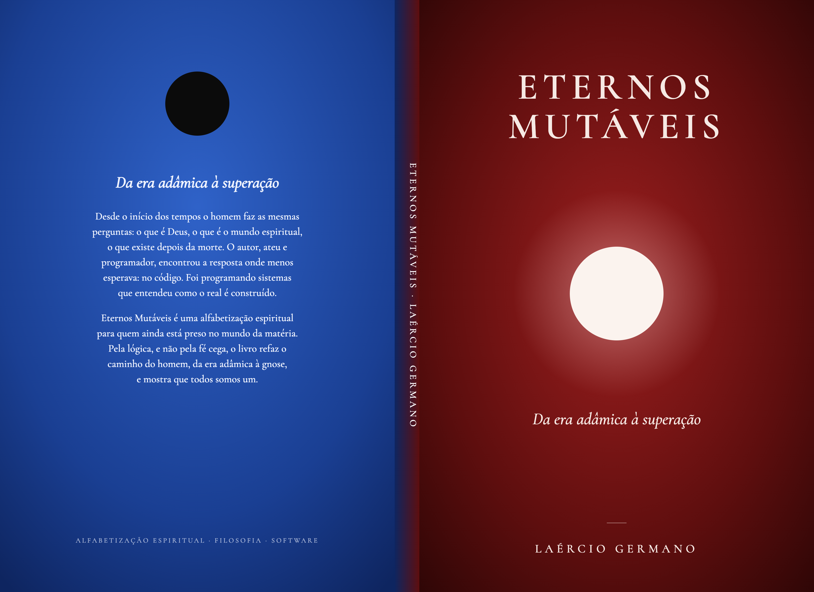
A frente inteira é uma peça de dominó: metade preta com bola branca, metade branca com bola preta. “Eternos” fica no lado da matéria e “Mutáveis” no lado do espírito; o título atravessa a divisa.
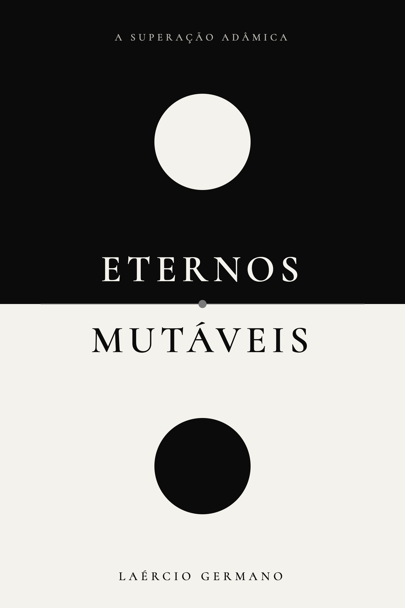
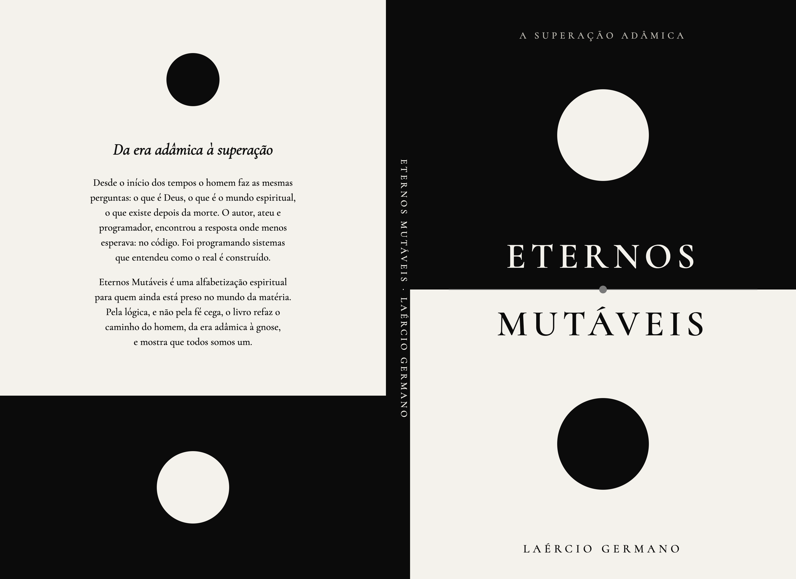
Do seu rascunho: a mão feminina preta (abstrato, metafísico, entrada) no lado branco e a mão masculina branca (sólido, físico, matéria) no lado preto. Na frente elas ainda não se tocam: a era adâmica, o vão. No verso, esticadas, os dedos se tocam: a superação adâmica.
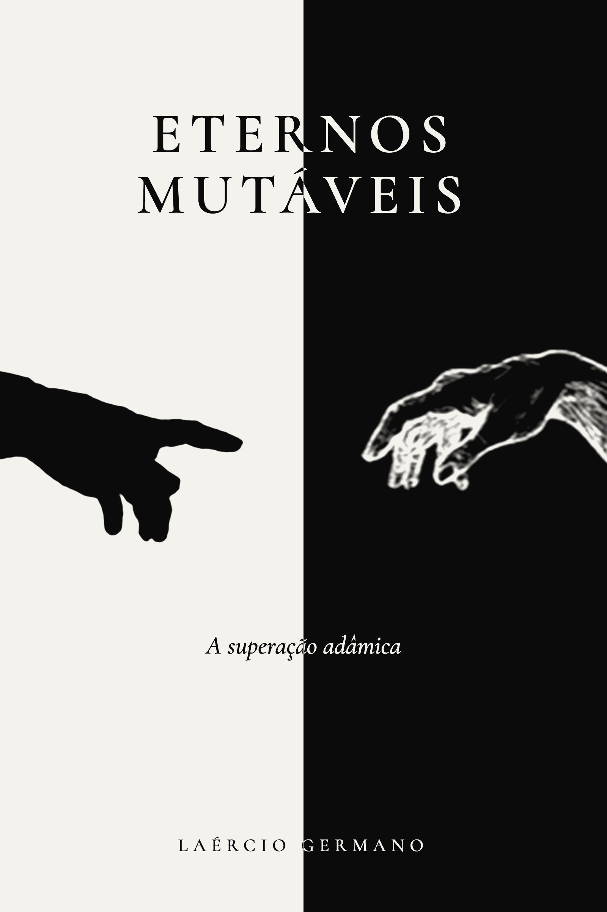
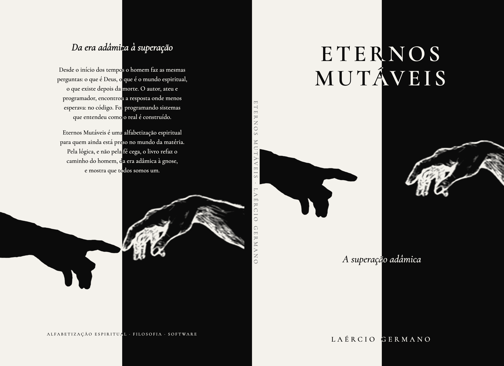
A mesma ideia em pé: o branco em cima com a mão feminina preta descendo, o preto embaixo com a mão masculina branca subindo; afastadas na frente. No verso a peça vira e os dedos se tocam, esticados. O texto inverte de cor sobre cada lado.
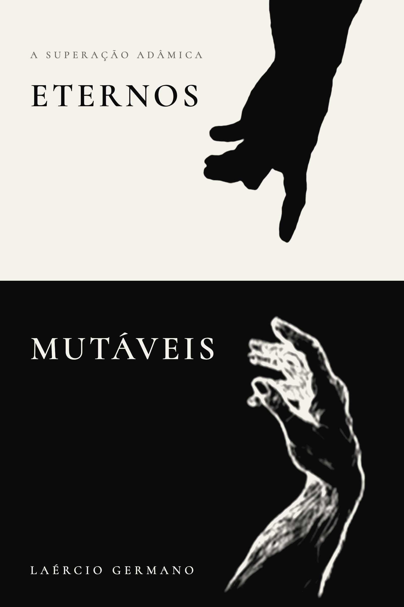
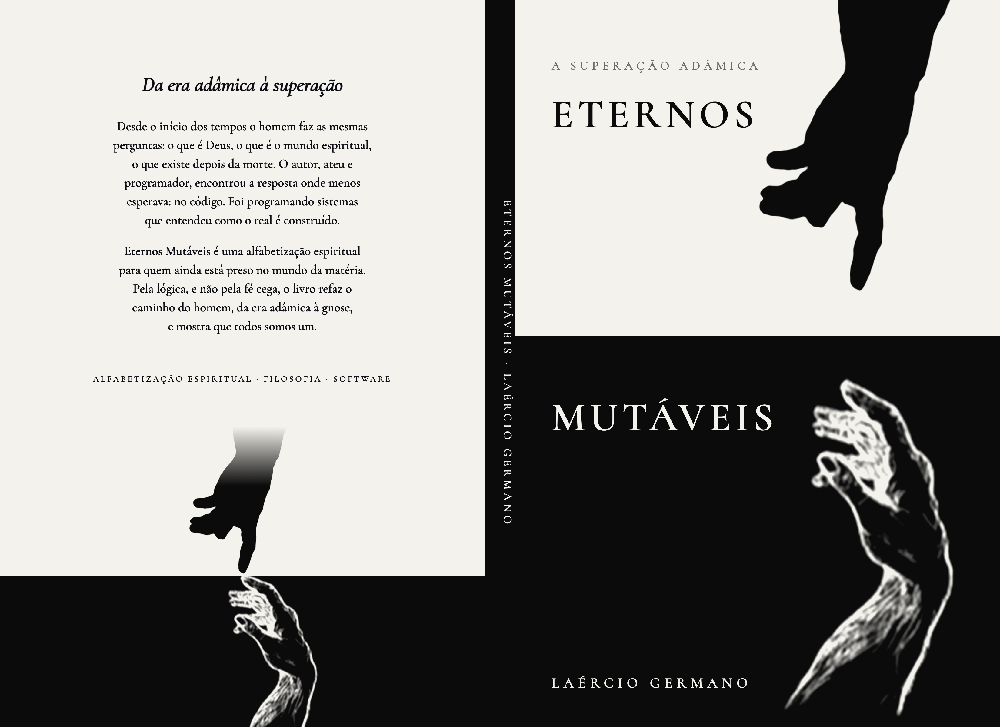